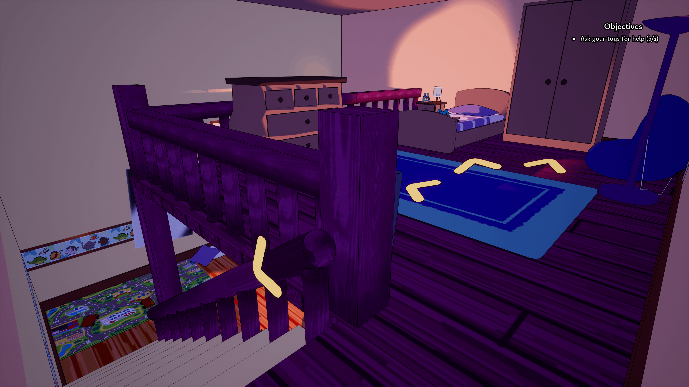
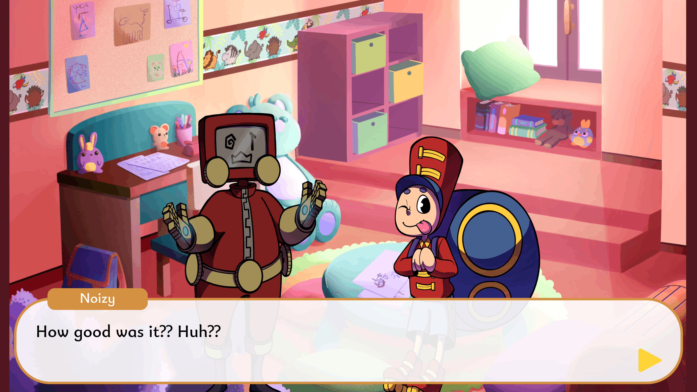
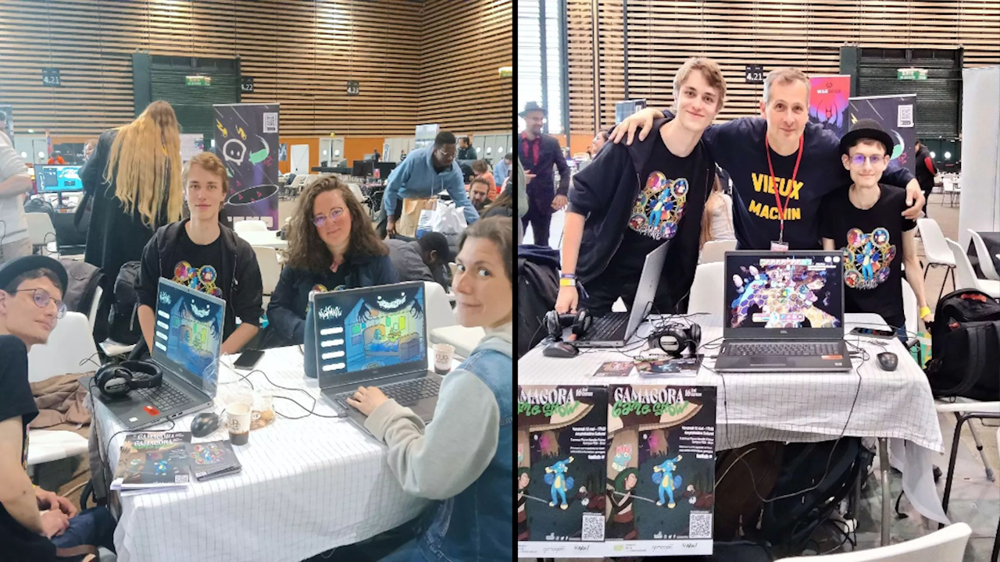

Nightmare
Semi-serious game developed with a team of 15 using Unreal Engine
For our final project in Master 2, we decided to create a game on a serious theme. This project was the largest I had worked on until then. We were 4 developers, 3 graphic artists, 4 level designers, with the help of 2 sound designers and 2 script reviewers.

The game dealt with a very serious theme: incest and child abuse. We contacted associations like L'enfant bleu to ensure we handled the subject with respect.

The primary goal was to make the game enjoyable before addressing the serious theme. We divided the game into three types of gameplay:
- A turn-based combat system on a hexagonal grid.
- An exploration phase in a point-and-click style within a child's room.
- A visual novel section where the player interacts with toys.
The gameplay loop unfolds over the course of a day, where the player follows the story and prepares the toys for the night. At night, the player must battle the child’s nightmares. We wrote a Game Design Document (GDD) to pitch the game and define the development roadmap. In the end, we presented the game live on Twitch in a large amphitheater.
The biggest challenge was managing such a large team and keeping everyone motivated. On the technical side, we had to adapt a C# library to work with C++ in the engine we were using. Personally, I mainly worked on the exploration phase and collaborated with the level designers to integrate VFX and combat animations. I also handled the cinematic editing and created the game trailer for Nightmare.
Watch the live presentation of the game on Twitch: Twitch Video
We continued working on the project after the presentation and showcased the game at Japan Game Touch, where we received very positive feedback.
The game is playable on itch.io. Feel free to try it yourself: Play Nightmare on itch.io